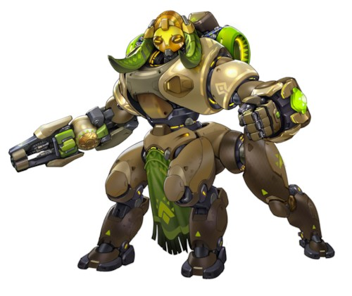

오리사 [돌격]
소개
본명: 오리사, 연령: 1달
직업: 수호 로봇
활동 근거지: 눔바니
소속: 없음
"여러분의 안전이야말로 제 의무입니다."
짧은 시간 동안 눔바니의 방어 로봇이었던 OR15의 부품으로 만들어진 오리사는 아직 배울 점이 많지만, 새롭게 탄생한 도시의 수호자이다.
옴닉 사태 이전부터 투입됐던 OR14 “이디나” 보안 로봇은 나이지리아의 거대한 옴니움에서 생산됐다가, 전쟁이 끝난 뒤에는 옴닉 사태에 투입됐던 다른 모델들과 함께 생산이 중지되었다. 20년 후, 눔바니는 외부 위협으로부터 도시를 보호하기 위해 OR14 프로그램을 부활시켰다. 이렇게 탄생한 OR15 모델은 둠피스트의 공격을 받아 파괴되기 전까지 짧은 시간 동안 도시를 지켰다.
둠피스트의 공격 이후, OR15 프로그램은 백지화되었으며, 도시 당국은 남은 OR15의 재고를 판매하였다. 부품을 구입한 자들 중에는 11살짜리 천재 소녀, 에피 올라델레도 있었다. 에피는 로봇공학과 인공지능 분야에서 놀라운 성과를 이뤄내며, 아다위 재단의 “영재 지원상”을 수상하기도 했다.
열린 사고를 가진 부모님의 허락과 지원 아래, 에피는 지원금의 대부분을 폐기된 OR15 로봇을 구매하는 데 썼다. 에피는 눔바니를 보호할 존재가 필요하고, 업그레이드된 OR15라면 그 일을 해낼 수 있을 거라 믿었던 것이다. 에피는 로봇을 개조하며 직접 설계한 인격 코어를 설치했다.
에피는 눔바니의 새로운 영웅에게 오리사라는 이름을 주었다.
오리사는 눔바니를 위해 일하면서도 자신에게 최적화된 프로토콜을 찾기 위해 애쓰고 있다. 옴닉인 오리사는 경험 부족으로 가끔 문제를 일으키기도 한다. 다행히도, 적응에 뛰어난 오리사의 인공지능과 필요할 때마다 직접 개조에 나서는 에피의 의지 아래, 오리사와 에피는 빠짐없이 문제를 바로잡아 왔다.
수호자로서 활동을 시작한 만큼, 아직 오리사는 세상과 자신의 기능에 대해 알아야 할 부분이 많다. 하지만 워낙 낙천적인 성격인 에피의 도움과 서서히 커져가는 명예감과 의무감으로, 오리사는 무슨 일이 있어도 눔바니와 자신의 창조자를 지킬 준비가 되어 있다.